- Generated by
 1.9.1
1.9.1
|
ERF
Energy Research and Forecasting: An Atmospheric Modeling Code
|
Classes | |
| struct | ExecutionProvenance |
| struct | ArtifactProvenance |
| struct | ProvenanceRecord |
| struct | ProvenanceParseResult |
Typedefs | |
| using | ProvenanceReadResult = ProvenanceParseResult |
Enumerations | |
| enum class | LineageStatus { Complete , IncompleteAncestor , MissingJobInfo , MissingProvenanceBlock , MalformedProvenance , UnsupportedSchema , ArtifactTypeMismatch } |
| enum class | ArtifactType { Checkpoint , Plotfile2D , Plotfile3D } |
| enum class | ProvenanceReadStatus { Valid , MissingJobInfo , MissingProvenanceBlock , MalformedProvenance , UnsupportedSchema , ArtifactTypeMismatch } |
Functions | |
| std::string | uuid_v4_from_bytes (const std::array< std::uint8_t, 16 > &bytes) |
| bool | is_valid_uuid_v4 (std::string_view uuid) |
| std::string | generate_uuid_v4 () |
| std::string | format_utc (std::time_t time_value) |
| std::string | current_utc () |
| const char * | lineage_status_token (LineageStatus status) noexcept |
| const char * | artifact_type_token (ArtifactType type) noexcept |
| std::string | serialize_provenance_block (const ProvenanceRecord &record) |
| ProvenanceParseResult | parse_provenance_block (std::string_view text) |
| ProvenanceReadResult | read_job_info_file (const std::string &path) |
| ExecutionProvenance | make_cold_start_provenance (const std::string &execution_uuid, const std::string &execution_start_utc) |
| ExecutionProvenance | make_restart_provenance (const ExecutionProvenance ¤t_invocation, const ProvenanceRecord &parent_checkpoint, const std::string &checkpoint_path) |
| ExecutionProvenance | make_incomplete_restart_provenance (const ExecutionProvenance ¤t_invocation, ProvenanceReadStatus failure_status, const std::string &checkpoint_path) |
| ExecutionProvenance | initialize_execution_provenance () |
Variables | |
| constexpr int | schema_version = 1 |
| constexpr const char * | provenance_begin = "ERF_PROVENANCE_BEGIN" |
| constexpr const char * | provenance_end = "ERF_PROVENANCE_END" |
| using erf_provenance::ProvenanceReadResult = typedef ProvenanceParseResult |
|
strong |
|
strong |
The reason a lineage is incomplete is part of the persisted contract. Missing or invalid metadata never prevents ERF from reading physical state.
| Enumerator | |
|---|---|
| Complete | |
| IncompleteAncestor | |
| MissingJobInfo | |
| MissingProvenanceBlock | |
| MalformedProvenance | |
| UnsupportedSchema | |
| ArtifactTypeMismatch | |
|
strong |
|
noexcept |
Return the stable persisted token for an artifact type.
Referenced by ERF::ReadCheckpointFile(), serialize_provenance_block(), and ERF::writeJobInfo().
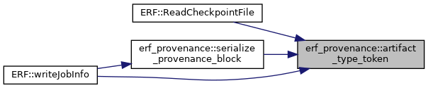
| std::string erf_provenance::current_utc | ( | ) |
Return the current time in the persisted UTC format.
Referenced by initialize_execution_provenance(), and ERF::writeJobInfo().
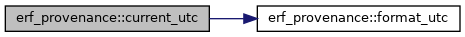
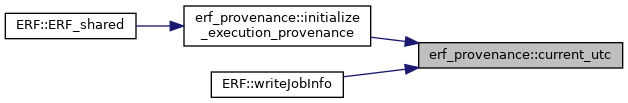
| std::string erf_provenance::format_utc | ( | std::time_t | time_value | ) |
Format a supplied clock value as an ISO 8601 UTC timestamp.
Referenced by current_utc().
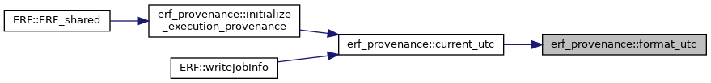
| std::string erf_provenance::generate_uuid_v4 | ( | ) |
Generate a UUID without using AMReX's scientific random-number stream.
Referenced by initialize_execution_provenance(), and ERF::writeJobInfo().
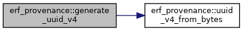
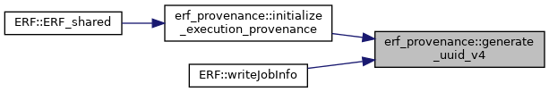
| ExecutionProvenance erf_provenance::initialize_execution_provenance | ( | ) |
Initialize one process-wide invocation record and share it across multiblock ERF objects.
Referenced by ERF::ERF_shared().
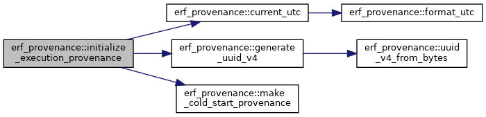
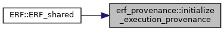
| bool erf_provenance::is_valid_uuid_v4 | ( | std::string_view | uuid | ) |
Validate a lowercase or uppercase canonical RFC UUIDv4 string.
|
noexcept |
Return the stable persisted token for a lineage status.
Referenced by serialize_provenance_block().
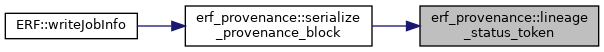
| ExecutionProvenance erf_provenance::make_cold_start_provenance | ( | const std::string & | execution_uuid, |
| const std::string & | execution_start_utc | ||
| ) |
Create the root record for one cold-start invocation.
Referenced by initialize_execution_provenance().
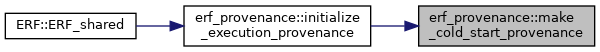
| ExecutionProvenance erf_provenance::make_incomplete_restart_provenance | ( | const ExecutionProvenance & | current_invocation, |
| ProvenanceReadStatus | failure, | ||
| const std::string & | checkpoint_path | ||
| ) |
Start a new known lineage segment after a nonfatal provenance read failure.
Referenced by ERF::ReadCheckpointFile().
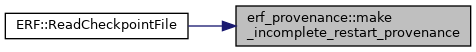
| ExecutionProvenance erf_provenance::make_restart_provenance | ( | const ExecutionProvenance & | current_invocation, |
| const ProvenanceRecord & | parent_checkpoint, | ||
| const std::string & | checkpoint_path | ||
| ) |
Create a child record from a valid checkpoint record, including its artifact UUID.
Referenced by ERF::ReadCheckpointFile().
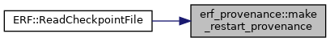
| ProvenanceParseResult erf_provenance::parse_provenance_block | ( | std::string_view | job_info_text | ) |
Parse only delimited provenance markers from a human-readable job_info.
Referenced by read_job_info_file().
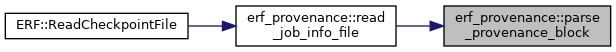
| ProvenanceReadResult erf_provenance::read_job_info_file | ( | const std::string & | job_info_path | ) |
Read and broadcast one job_info before parsing the same bytes on every rank.
Referenced by ERF::ReadCheckpointFile().
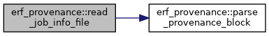
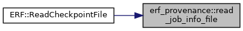
| std::string erf_provenance::serialize_provenance_block | ( | const ProvenanceRecord & | record | ) |
Serialize exactly one schema-1 machine-readable block.
Referenced by ERF::writeJobInfo().
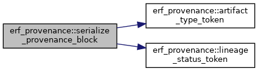
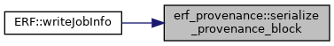
| std::string erf_provenance::uuid_v4_from_bytes | ( | const std::array< std::uint8_t, 16 > & | bytes | ) |
Format supplied bytes as a lowercase canonical RFC UUIDv4 string.
Referenced by generate_uuid_v4().
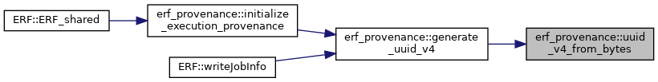
|
constexpr |
Referenced by parse_provenance_block(), and serialize_provenance_block().
|
constexpr |
Referenced by parse_provenance_block(), and serialize_provenance_block().
|
constexpr |
Referenced by parse_provenance_block().